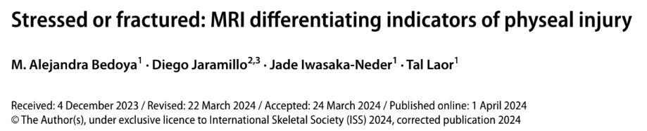

Stressed or Fractured?
MRI Differentiating Indicators of Physeal Injury
Daniel Hofstedt, DO
February 11, 2025 | MSK Journal Club

Why This Topic Matters
- Differentiating chronic physeal stress vs. acute Salter-Harris (SH) fractures is crucial for treatment.
- Radiologists often interpret MRI without complete clinical history.
- Common in active pediatric patients.
Review of Physeal Anatomy
- Resting, proliferative, hypertrophic zones.
- Zone of Provisional Calcification (ZPC) interface.
- Longitudinal growth occurs via endochondral ossification.
Study Overview
- Retrospective study, 68 MRIs, 62 children.
- Two groups: Chronic physeal stress (48), SH fractures (35).
- MRI sequences: T2-weighted FS, proton-density, T1-weighted.
Key MRI Findings: Chronic Physeal Stress
- ZPC discontinuity (79% vs. 49%, p = 0.004)
- Focal physeal thickening (98% vs. 77%, p = 0.003)
- No periosteal or perichondrial injury.
Key MRI Findings: Acute SH Fractures
- Periosteal and perichondrial injury (80–83%, p < 0.001)
- Soft tissue edema (97% vs. 0%, p < 0.001)
- Joint effusion (60% vs. 4%, p < 0.001)
Clinical Implications
- Chronic stress → activity modification, PT, monitoring.
- Acute SH fractures → immobilization, potential surgery.
- Periosteal injury, edema, effusion → think SH fracture.
Conclusion
- MRI helps differentiate chronic stress from acute fractures.
- Look for key indicators: ZPC discontinuity, periosteal injury.
- Future research: Long-term MRI follow-up of SH fractures.